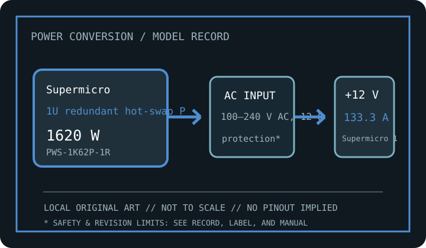

[ OEM / SERVER HOT-SWAP SUPPLIES // IDENTIFIED UNIT ]
Supermicro PWS-1K62P-1R
Exact model record for Supermicro identifier PWS-1K62P-1R. Published ratings below are a model-family reference, not a substitute for the individual unit’s rating label and revision documentation.

SAFETY: Never open a PSU or probe its interior. Dangerous voltage can remain after unplugging; if damaged, wet, noisy, burned, or unstable, disconnect it and replace it with a verified compatible unit. For server hot-plug models, use only the host service procedure and confirm redundancy before removal.
Recorded model specifications
| Exact catalog identifier | Supermicro PWS-1K62P-1R. Match all suffixes, assembly and revision markings on the actual label. |
|---|---|
| Form / rated output | 1U redundant hot-swap PSU; manufacturer-rated total continuous output class: 1620 W. Peak/transient capacity, temperature derating, and combined-rail limits remain specification-revision dependent. |
| AC input rating | 100–240 V AC, 12–8 A, 50/60 Hz. Region, temperature, and load may change the nameplate current; use the unit's own label for installation. |
| DC rail reference | Main +12 V rail: 134 A (1620 W class). +3.3 V / +5 V: +12 V main output; auxiliary 12 V standby and management signals are chassis-specific. Actual combined limits and auxiliary/standby outputs must be checked on the model-specific output table. |
| Connectors / system interface | Supermicro 1U hot-swap blind-mate edge connector; not an ATX harness. |
| Mechanical envelope | 73.5 × 40 × 220 mm (width × height × depth where applicable). Check manufacturer's mounting drawing, screw locations, grille/fan clearance, cable bend radius, and chassis tolerances; never use nominal dimensions alone to force-fit a unit. |
| Standards / revision caveat | 80 PLUS Platinum; redundancy/platform support follows Supermicro chassis matrix. Connector standards, efficiency certification, and mechanical form factor are different things. ATX, ATX12V, SFX, TFX, Flex ATX, and OEM interfaces are not interchangeable merely because they fit. |
Replacement & compatibility
- Read exact manufacturer model/SKU, DC output table, AC input, hardware revision, date code, and applicable service manual from the physical unit. The same family name can cover materially different revisions.
- For ATX-family units, confirm motherboard/EPS/PCIe connector count and pinout, total and per-rail limits, chassis size, clearances, and GPU transient/cable requirements. For proprietary OEM units, match the exact machine type, FRU/assembly number, keyed connector and service documentation.
- Use only modular cables explicitly qualified for this exact PSU model and revision. Modular PSU-side pinouts are not standardized; never transfer cables from a different supply based only on physical fit.
- Never use an unverified pin adapter to bridge proprietary pinouts. Replacing a PSU cannot correct a damaged motherboard, shorted load, or unsuitable mains circuit.
Revision and documentation notes
Check label suffix and firmware/chassis support; airflow direction and power sharing matter for identical redundant pairs. Ratings shown are the source-backed nominal model reference; manufacturer documentation can change with regional SKU, revision, certification listing, or replacement part. Confirm all figures against the exact source manual and the PSU label before purchasing or servicing. AC/DC figures on this archive do not describe internal topology or guarantee used-unit condition.
Sources & further reading
- Manufacturer or model reference: Supermicro PWS-1K62P-1R (PWS-1K62P-1R)Primary product/manual listing for the named model; verify that its exact suffix matches this record and the unit label.
- Intel ATX desktop power supply design guide (where ATX applies)Standards context only; does not certify this SKU or apply to proprietary server/legacy interfaces.
- Corsair modular-cable compatibility chart (illustrative; use the named PSU maker’s exact list)Illustrates manufacturer-specific PSU cable rules; use the named PSU brand's exact compatibility list.
Specifications here are not a substitute for the manufacturer’s model-specific manual, label, chassis service guide, or electrical safety regulations. Where a generic family webpage conflicts with the exact unit label/manual, the label and specific manual control.